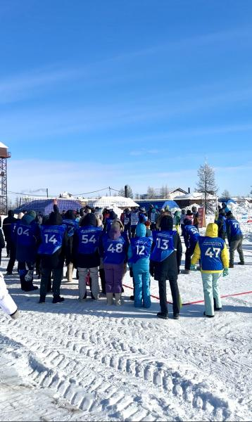

В Салехарде успешно завершилось мероприятие специального модуля для участников трех наборов «Ямальская школа кадрового резерва» под названием «Дружба потоков». В этом образовательном событии приняли участие 151 управленец. Модуль проходил на площадке «Ямал Парк». Основными темами, рассмотренными на мероприятии, были развитие лидерских качеств, управление командой, стратегическое мышление и адаптация к изменениям. Участники также принимали участие в тренингах, деловых играх и кейс-методе обучения, которые помогли им улучшить свои навыки руководителя и лидера.
Для успешного выступления на "Зимних играх" "Ямальская школа кадрового резерва". необходимо владеть определенной техникой и навыками. Участники соревнований должны уметь собирать нарты, чтобы обеспечить максимальную ходовую способность и высокую скорость передвижения. Они также должны быть знакомы с техникой управления финскими санями и командными лыжами, чтобы эффективно передвигаться по различным типам снега и поверхностям. Эти навыки требуют специальной тренировки и умения подбирать правильное снаряжение, что поможет участникам достичь наивысших результатов в соревнованиях.